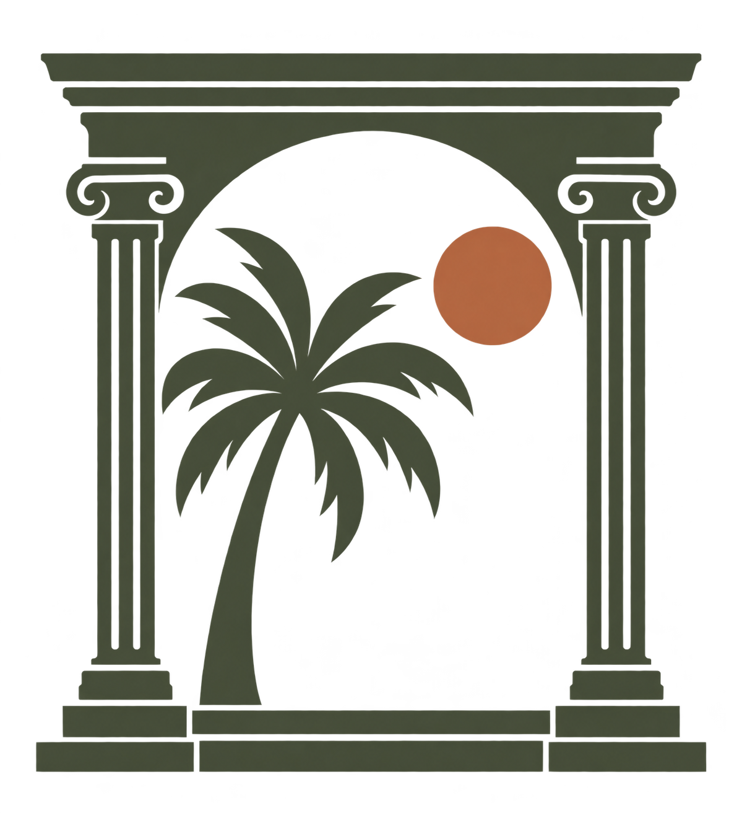

Artwork Library
The coastal scenes, architectural details, and botanical studies behind the site. Open or download the original images below.

Builder MiamiThe coastal scenes, architectural details, and botanical studies behind the site. Open or download the original images below.